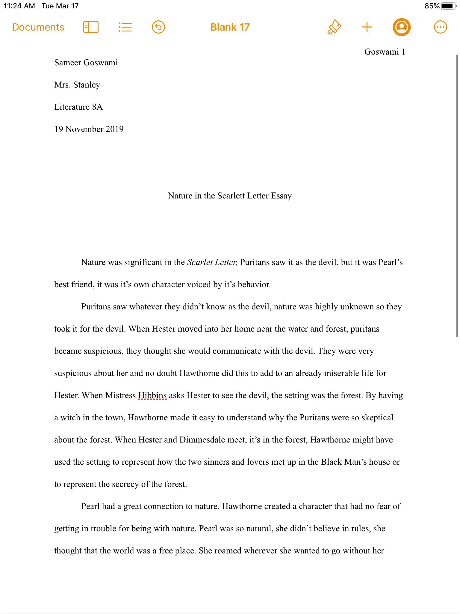

The Scarlet Letter Essay was an essay written on one of the seven prompts. The prompt I chose was the significance of nature in the scarlet letter.
I chose to include my essay(below) because it shows that I need more analysis and that it is my main problem. Although my essay was not perfect, I still feel it was one of the best essays I've ever written. I went over the essay and corrected most mistakes. This essay shows my critical thinking, as I thought about which prompt I would be the best at and what was backed by the most evidence.
